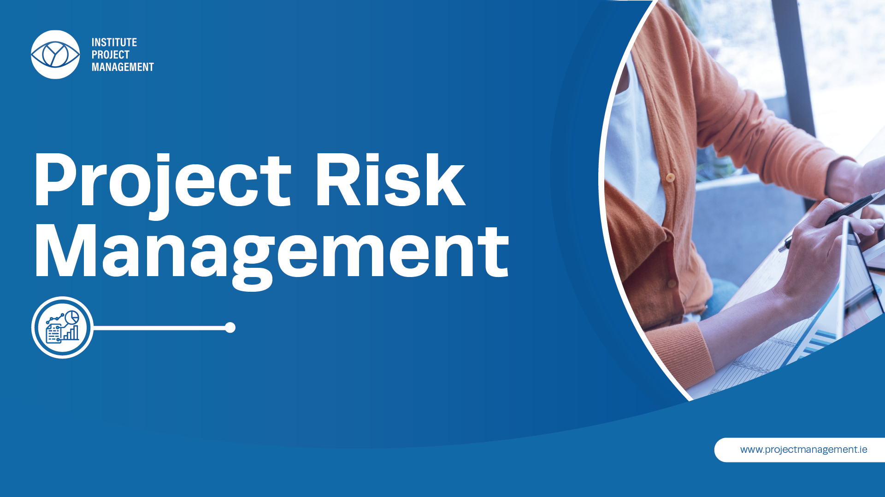
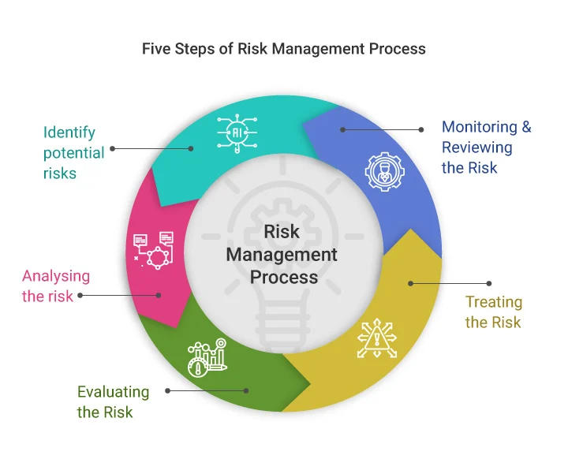

The Overview of Project Risk Management
By: Daniel Cisneros Siliezar
If you are a current or aspiring Agile project manager working in the sector of information technology, you are or will be familiar with the topic of project risk management. By reading this blog post, you are also looking to enhance your knowledge and skills in being a better project manager that practices Agile methodologies. What is the meaning of risk? What is project risk management? Why is it important? What are the advantages? These questions will be addressed as we go through the topic.
What is the Meaning of Risk?
A quick Google search will define risk as a scenario that involves being exposed to harm, danger, or loss. In terms of project management, risk refers to an internal or external uncertainty that could have a positive or negative reaction on accomplishing project goals. A risk can arise in many forms during a project, but not limited to:
- Time delays
- Budget overruns
- Scope creep
- Lack of a clear objective
- Poor communication
- Changing market conditions
- Unclear roles and tasks during the project
As an Agile project manager in information technology, you should know about known and unknown risks. Known risks are described as risks that were identified and evaluated by the project team. Unknown risks are risks not identified or evaluated, therefore are impossible to manage. You should also be aware of the different types of attitudes towards risks. You might notice that some individuals feel neutral in regards to risk, others may try to avoid risk as much as they can, and others are willing to take risks to achieve objectives. These sort of preferences that people have fall under the theory of risk utility. Risk utility is defined as the pleasure or satisfaction received from a possible payoff. There are three main types of people that react to risk:
- Risk averse: Someone that has a low acceptance or tolerance for risk. When more money is at stake for being lost, this individual would not be as inclined to take this sort of risk.
- Risk seeking: Someone that has a high acceptance or tolerance for risk. This individual tends to prefer results that are unpredictable and is usually willing to cover a penalty for risks in the long term.
- Risk neutral: Someone that has a neutral or balanced acceptance for risk. This sort of individual tends to be cautious, yet actionable when given risks. They would typically analyze them first prior to making a final decision on them.
It is your job to mitigate, avoid, change, or even accept the potential consequences of negative risks that you will face during your project. This is what leads into the concept of project risk management.
What is Project Risk Management?
Project risk management is the overall process of identifying, examining, and reacting to risk throughout the project's lifecycle and working to the best ability to meet the objectives of the project. As an Agile project manager, you must know that the concept of risk management is frequently overlooked in the field of project management. If you can manage your risk well, expect to have major improvements and contributions to the overall success of your project. There are several subprocesses that fall under project risk management:
- Risk management planning - This process is about making a decision on how you should approach and plan activities regarding risk management for the project. The output of this process is the risk management plan.
- Risk identification - This subprocess is about deciding which risks are more likely to impact a project and taking notes of the details of each risk. The outputs of this subprocess include the creation of a risk register, risk report, and further updates to other documents regarding the project.
- Qualitative risk analysis performance - This subprocess is about deciding which risks should have more priority based on their chances of occurrence and impact on the project. Once risks are identified, teams have a variety of techniques and options to rank risks and change information within the register. The output of this subprocess involves updates to the documents of the project.
- Quantitative risk analysis performance - This subprocess is about numerically predicting the risks' effects on the objectives of a project. The outputs of this subprocess are updates to the project's documentation.
- Risk response planning - This subprocess is about taking procedures to better opportunities and mitigate threats to achieving the objectives of the project. Utilizing the outputs from the other subprocesses, teams could come up with risk response plans that would result in project management plan updates, change requests, and updates to the project documentation.
- Risk response implementation - This subprocess is about the implementation of risk response plans. The outputs of this subprocess include updates to the project documentation and change requests.
- Risk monitoring - This subprocess is about the monitoring of risks that were previously identified or leftover, identifying new risks, executing the risk response strategies, and analyzing the usefulness of risk plans throughout the project's lifecycle. The outputs of this subprocess include change requests, information regarding work performance, and updates to project documentation, management plan, and process assets of the organization.

Why is Project Risk Management Important?
Good risk management practices can result in a positive impact on choosing projects, deciding on their scope, and creating accurate schedules and cost predictions. It assists stakeholders to understand the project and its factors, as well as involving team members in defining their own weaknesses and strengths. Projects in information technology usually involve a lot of risks and having bad risk management can potentially delay or even ruin the project. As a project manager, it is of utmost importance to not forget about managing risks throughout your assigned project.
Conclusion
As an Agile project manager, you will be responsible for managing risks throughout a project's lifecycle. You now understand the meaning of risk, the types of risks to know, the sub processes of project risk management, and the importance of managing risks. Managing risks effectively will strongly impact your team’s performance during the project’s lifecycle. Now you understand another underrated, yet highly important aspect of Agile project management in information technology.
References
- Information Technology Project Management book by Kathy Schwalbe 9th Edition
- Knowledge Hut - Risks in Project Management